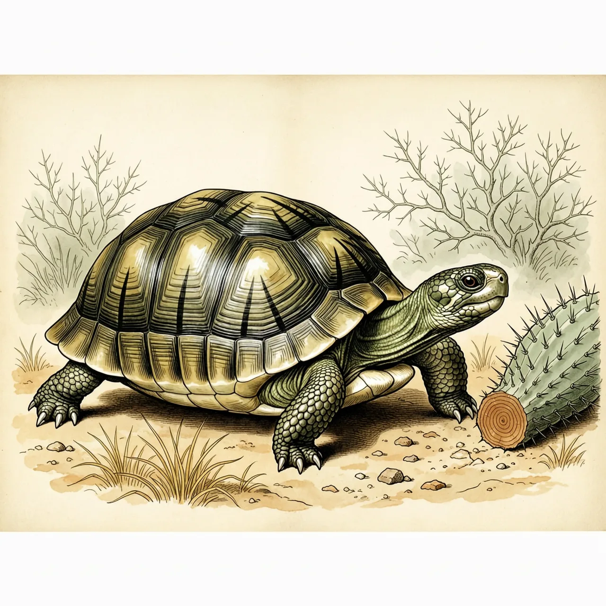
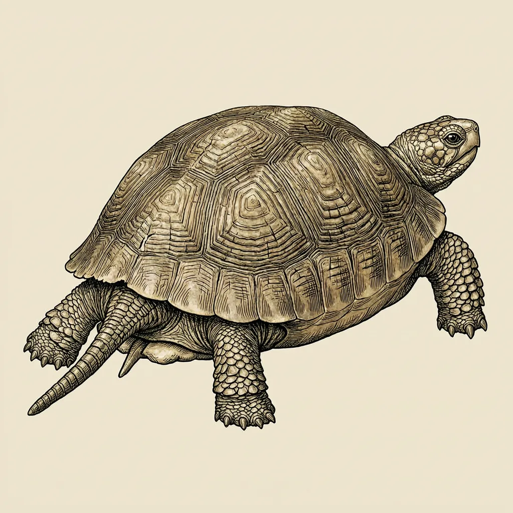

射纹龟是马达加斯加南部干旱刺森林的特有陆龟，背甲上每块盾片都长着从中心向外放射的纹路。它们植食，偏爱仙人掌，有记录个体活了至少188年。因栖息地破坏与偷猎，这一物种已跌至极危，野生捕捉与国际买卖被明令禁止。
在马达加斯加南部，一只射纹龟的一餐可能就是一株仙人掌。这种陆龟植食，偏爱果实与多汁植物，干旱的刺森林和南部的林地就是它的家，后来它才被带到附近的留尼汪和毛里求斯。它的头和脚是绿色的，部分个体头顶带一块黄斑；背甲高而偏方，盾片粗糙，每块盾片上都有从中心向外放射的纹路，射纹龟的名字就出于此。
射纹龟的繁殖几乎全压在雌龟身上。雄龟体长约31厘米后进行第一次交配，交配前上下摆动头部，去闻雌龟的后腿与尾部泄殖腔，过程中常发出咝咝的叫声。交配对雌性有风险，曾有雌龟背甲破裂的记录。交配后，雌龟会预先挖一个15到20厘米深的坑，产下3到12枚蛋，然后离开。孵化要等5到8个月，刚出壳的幼龟只有3.2到4厘米，壳呈白色到灰白色，和成体完全不同，不久后背甲开始隆起成球状。
长寿是射纹龟最出格的资本。有记载中最长寿的龟之一就是一只射纹龟，名叫 Tu'i Malila，生于1777年前后，死于1965年5月19日，至少活了188岁。它死后的半个多世纪里，这个马达加斯加南部与西南部的特有种因栖息地破坏和偷猎跌到极危。CITES 附录一已禁止捕捉任何野生射纹龟与其非法买卖，原产地的人工繁殖保育正在进行，用以提升这个物种的数量。
